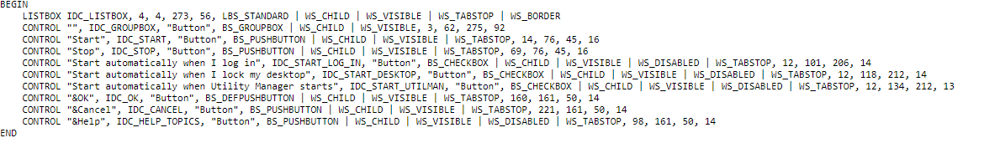

Understanding resource files (.rc)
🢂 What is a resource file?
Windows and ReactOS can be localized through forms of resources files, with .rc as file extension. Resource files are implemented through MUI technology
which makes it possible for the operating system to be localized in various languages across the globe. A resource file is like a file script that composes
the general graphical infrastructure of a program in Windows/ReactOS, that is, menus, dialog templates, windows, icons, bitmaps and static control texts for instance.

A resource file is based on three main parts called resource-definition statements: controls, resources and statements. Each one of these categories represent their own purpose and functionality behind a resource file. Let's take for example this resource file. In ReactOS every resource file has their specific language specifier, en-US.rc for example, which is a English (United States) resource file. The basic rule on understanding this is...
lang-country.rc
🢂 Basic structure of a RC file
Every resource file must come up with a language declaration statement to inform the system that the localization file is strictly for XYZ language. As so...
LANGUAGE LANG_ENGLISH, SUBLANG_ENGLISH_US
LANG_ENGLISH is the language identifier whereas SUBLANG_ENGLISH_US is the sublanguage identifier. The sublanguage identifier
specifies a specific country or region in a language locale realm so SUBLANG_ENGLISH_US represents English (United States of America).
For a list of complete language and sublanguage identifiers can be found in this page.
Every language comes with its own language identifiers for LANGUAGE statement.
As we were pointing in a resource file of ReactOS Utility Manager, let's use it as a general reference and explanation of a basic RC translation file structure. Next to examine is the dialog template.

This is the initial definition of a dialog box template. A dialog box is merely a modal (or modeless) dialog window that comes up with a window frame, the non client area, and the client area which is the inside of the dialog. Styles and extended styles can be applied, a caption as well as a specific font and size for it. Window styles can be found here.
{kind=link}
Every dialog comes with child controls. A child control is a child window that belongs to the parent dialog window which allows user interaction with the GUI interface of an application. In fact, in Windows and ReactOS everything is a window, that is, buttons, combo boxes, static texts and a whole lot more. Let's examine a child control.
CONTROL "Start automatically when Utility Manager starts", IDC_START_UTILMAN, "Button", BS_CHECKBOX | WS_CHILD | WS_VISIBLE | WS_DISABLED | WS_TABSTOP, 12, 134, 212, 13
CONTROL is a resource control belonging to the control resource-definition family. This control represents a user defined child control with a specific class.
In this case this control defines a button with a checkbox although sometimes you can find checkbox controls defined directly like this.
In order to understand better when translating something let's bisect this control parameter by parameter.
"Start automatically when Utility Manager starts"
Sentences wrapped in double quotes denote strings. Strings are what a translator needs to localize them.
IDC_START_UTILMAN
This is the resource ID. Resource IDs define their own unique identification used for resource manipulation through code and they are usually declared in a C header, resource.h
of an application.
"Button"
This denotes the control class. This parameter is used for CONTROL to invoke a specific control class such as button control class, edit control class, combo box class,
scroll bar class and so forth. This should be left alone!
BS_CHECKBOX | WS_CHILD | WS_VISIBLE | WS_DISABLED | WS_TABSTOP
The following parameter is control styles. Styles are used to alter or modify the behaviour of a child control and can be thoroughly combined with various style values
depending on the chosen control class. For example BS_CHECKBOX denotes a checkbox for a button and as BS prefix stands for Button Style you cannot
combine styles of different control classes like list-view!
12, 134, 212, 13
Finally here comes the coordinate and width/height parameters of a child control. The parameters represent X, Y, width and height of the control. As a general rule for translators you must always test your changes to translations before you submit a pull request such as checking that the translated strings fit to specific areas like for example the string in a push-button or a checkbox. Translators are recommended to edit these values accordingly to what they translate. For a general description of common parameters of controls please consult this page.

This section of the resource file is the string tables. A string table, created with STRINGTABLE, consists of one or more null-terminated strings which are Unicode
or ASCII depending on the application encoding environment. As usual the strings wrapped in double quotes can be translated. Keep in mind stuff like %s are format
specifiers and these must be left alone!
🢂 Including your RC file
For translators that have translated a module or application they must include the files in the main resource file of the application, as an example. The inclusion is done within a C macro preprocessor. Furthermore the actual inclusion must respect the alphabetical order when including new translation files!